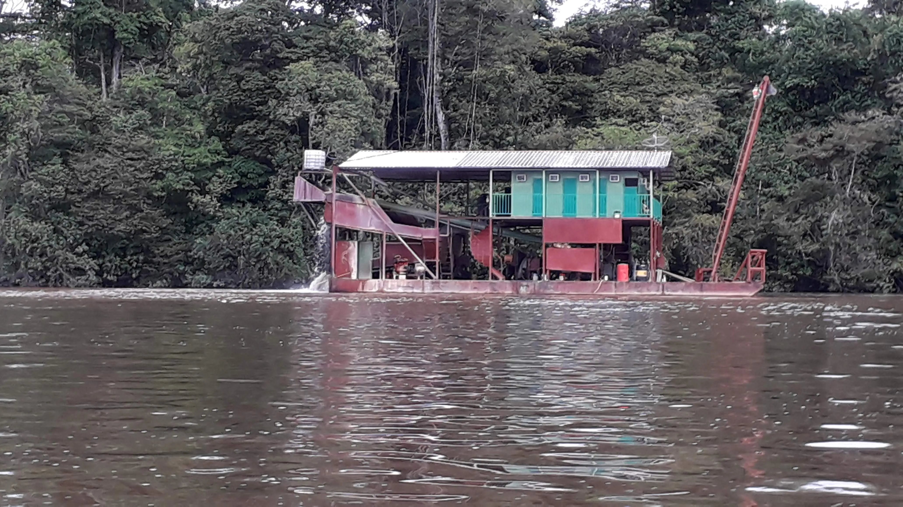
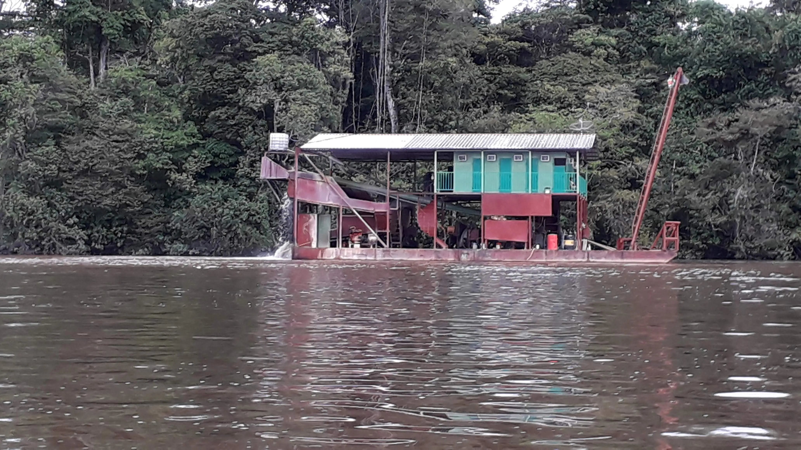

La Guyane
La Guyane
Saviez-vous que la France avait une frontière commune avec le Brésil ? Et oui, et le département qui a ce privilège est frontalier avec le nord du Brésil, l'est du Suriname, et est bordé par l'océan Atlantique sur le littoral côté est: c'est La Guyane. Le fleuve Maroni est sa frontière avec le Surinam à l'Ouest, et son pendant à l'Est est le fleuve Oyapock qui le sépare du Brésil.
Une riche biodiversité
Bon, on ne vient pas en Guyane pour son eau turquoise et ses lagons. Mais sa biodiversité est telle qu'en son sein il existe le Parc Amazonien qui vise à préserver sa faune et sa flore.
Petit échantillon de la faune


La flore
La flore tout comme la faune est luxuriante, partout en amazone on peut observer des fleurs, des arbres. On a l'impréssion que tout n'est que vert mais en observant on finit par en distinguer les différentes plantes et arbres. La Guyane est un véritable paradis pour les amoureux de la nature. Toucans, paresseux, singes et insectes colorés côtoient une végétation luxuriante.


En terme de santé, le territoire Guyanais sur sa partie littorale comprend au nord l'hôpital de Saint Laurent du Maroni, plus au sud celui de Kourou, ensuite celui de Cayenne. Dans les communes ou à l'intérieur de la forêt amazonienne, il existe un maillage de CDPS (dispensaire qui assure la plupart des soins en partant de la médecine de ville à la pédiatrie, le suivi des grossesses jusqu'aux accouchements...).

La Guyane moderne
Kourou : Ariane
Le 101e tir d’Ariane V, un moment magique à vivre ! Une lueur dans la nuit, une boule de feu qui monte au ciel et aprés un petit moment, les vibrations sous nos pieds, l'odeur et le bruit des moteurs qui nous parviennent. Quel contraste avec le pays que je découvrirai ensuite.
Moyens de locomotion
Au cours de mon passage en Guyane, j'ai rencontré 2 mondes totalement opposés : une Guyane résolument moderne (notamment Cayenne et Kourou), et une Guyane sauvage, où l'accès ne se fait que par pirogue et/ou avion...
Suivant l'endroit ou vous devez vous déplacer, les transports peuvent être assez exotiques... Le long du littoral, pas de problemes particuliers hormi le fait que les transports en commun sont peu nombreux et il vaut mieux privilégier les navettes privées pour se rendre dans le nord ou le sud du département. J'aurai même été pris en stop dans le panier à salade et en pirogue des gendarmes. A part cela ne reste que les pirogues pour rallier les villages disséminés le long du fleuve Surinam à l'Ouest ou Oyapoque a l'Est. Quel plaisir ou quel enfer de faire de la pirogue-stop et ne pas savoir quand se fera le départ et encore moins quand se fera l'arrivée. Une chose extraordinaire du coup est que si vous ne donnez plus signe de vie pendant quelques jours, personne ne s'inquietera forcément de votre disparition tellement la notion de temps n'est pas la même la bas. Pas de réseau téléphonique partout forcément, mais sur le berges des fleuves, il y a des yeux partout et les informations circulent vite façon téléphone arabe. Il faut en plus tenir compte de la saison des pluies ou de la saison sèche car la modifiera le temps de voyage selon la hauteur des eaux des fleuves. Le Maroni officiellement n'est pas une voie navigable, mais qu'importe pour les gens du fleuve, c'est juste le seul accés pour se déplacer. Enfin si vous etes téméraire il peut vous rester la foret à traverser, mais même pas en rêve. Il me reste en tête les récits de André Cognat et Raymond Maufrais 2 aventuriers français au destin totalement différent.
La pirogue alu. ou en bois sur le Maroni, c'est trop classe les premières fois. Mais au bout de quelques voyages on commence à en entrevoir les inconvénients surtout quand elles ne sont pas couvertes...à savoir pluies, soleil et chaleur. Mais il se fait toujours un arret le long des épiceries dédiées à l'orpaillage le long des rives du Surinam.


Les bagnes de Guyane : un passé lourd mais fascinant
La Guyane est indissociable de l’histoire de ses bagnes, instaurés à la fin du XIXᵉ siècle. Destinés aux prisonniers de droit commun et aux condamnés politiques, ces bagnes ont marqué le territoire pendant près de 100 ans. Le plus célèbre, le bagne de Saint-Laurent-du-Maroni, était une véritable ville carcérale où les détenus travaillaient dans des conditions extrêmement difficiles, souvent sous un climat tropical impitoyable.
Des îles comme celle du Diable, ayant acueilli le bagnard "Papillon", sont devenues des symboles de ce passé tragique. Ces sites témoignent de souffrances mais aussi de récits d’endurance et de survie. Aujourd’hui, ils font partie du patrimoine historique de la Guyane et attirent de nombreux visiteurs, curieux de comprendre cette période sombre mais essentielle pour saisir l’histoire locale. Les restes du bagne sont empreints de cette histoire et les bagnards sont indissociables des gardiens et de leur famille. On ressent cette atmosphère chargée des souffrances passées et plus encore aux abords de l'hôpital désaffecté, à l'abandon, ou à l'entrée du cimetierre des enfants.
L'orpaillage
Véritable fléau en Guyane, l'orpaillage. Il est concentré sur sur le Maroni essentiellement. En navigant sur le fleuve c'est des dizaines et des dizaines de barges d'orpaillage, de camps d'orpailleurs que l'on peut rencontrer, on les voit au milieu de la foret quand on la survole en avion. Le fleuve porte les stigmates qu'on aperçoit sur les berges en saison sèche tellement la végétation en est détruite à cause du mercure utilisé pour extraire l'or. Ici en métropole on a les magasins "tout dédié" au bricolage, en Guyane c'est "tout dédié" à l'orpaillage. Et rien n'est caché, ce sont les boutiques qui ont pignon sur rue...heu je veux dire pignon sur fleuve/

 

Aventures au cœur de la forêt tropicale guyanaise
Exploration des fleuves en pirogue
Naviguer sur le Maroni ou l’Oyapock est une expérience unique. La pirogue, qu’elle soit en bois ou en aluminium, permet de découvrir les villages isolés et d’approcher la faune sauvage le long des rives. C’est l’occasion de combiner sensations fortes et immersion dans la nature Amazonienne.
Parapente et sensations aériennes
Pour ceux qui aiment prendre de la hauteur, le parapente offre une vue spectaculaire sur la forêt tropicale et le littoral guyanais. L’adrénaline est au rendez-vous tout en profitant d’un panorama unique : fleuves sinueux, canopée dense et plages à perte de vue.

Pêche et vie fluviale
Les rivières et fleuves de Guyane sont parfaits pour la pêche sportive. Du Maroni au Surinam, on peut pêcher différentes espèces dans des décors incroyables. C’est aussi une manière de s’immerger dans la culture locale, où le fleuve rythme le quotidien des habitants.
Randonnées et treks en pleine forêt
Les sentiers guyanais offrent des parcours adaptés à tous les niveaux, des promenades tranquilles aux treks exigeants. Chaque randonnée est l’occasion de découvrir la biodiversité locale, les arbres gigantesques et les plantes endémiques qui font la richesse de la forêt tropicale.